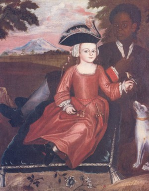

Among the most often discussed yet least understood parts of the early Albany story concern the roles of those of African ancestry in the growth and development of the pre-industrial city.
The Colonial Albany Social History Project
is making a special effort to look for and
not overlook Afro Albanians in the historical record. This initiative is ongoing
and has begun to yield new information on early Albany's African ancestry community.
Our overall goal is to develop a biography for each person who lived in the
pre-industrial city - Afro Albanians definitely included!
This story dates from the earliest days of the community's life. Slavery was
an integral feature of Albany's first 200 years. Beginning during the New Netherland
period, and becoming widespread during the latter part of the eighteenth century,
slavery lasted until 1827 when it finally was eradicated by law in New York
State. We believe that slavery in Albany reached its peak in 1790
when 572 slaves were counted as residents - placing at least one African ancestry
person in almost a third of the city's 573 households.

Colonial censuses provide some data on the African presence in Albany
but little information on Afro Albanian lives. The provincial census
of 1697 identified a total 23 Negroes (although not by name) in all of immense Albany
County. How many of those individuals lived in the city of Albany
and how many in the countryside is a question that remains unanswered.
Such vagary was characteristic of subsequent enumerating. With only
two exceptions, none of the population
surveys taken during the eighteenth century differentiated between
slaves living in the city and in the surrounding countryside. Nor
did they provide any information on their lives.
Most of the estimated 1,600 African ancestry people who lived in the city of
Albany before 1800 were called slaves. Technically/legally, slaves were the
property of an owner. They had no civil rights. They could be and
were bought and sold, bequeathed in wills, and were required to perform
a wide range of tasks and chores. Because of their dehumanized status,
slaves were less frequently mentioned in the mainstream records of
the community.
However, for the eighteenth-century, substantial information on these Afro Albanians has been recovered from core community-based historical resources whose compilation, processing, and examination comprises the basic research design of the Colonial Albany Project. These historical resources have enabled us to open biographical files on more than a hundred African ancestry members of the early Albany community and to develop biographical profiles that we hope can become comparable to what we know about Dinnah Jackson, Benjamin Lattimore, Captain Samuel Schuyler, and many of their neighbors.
Our records sweep has yielded important information on a number of enslaved people. The great fire of 1793 has enabled us to develop profiles for individuals called Pomp, "Dinah," and Bet that otherwise might have been impossible.
An Internet version of a published article further explains the emergence of an Afro-Albanian middle class in the decades following the American Revolution.
At this point, we have been most successful in presenting some sources and summarizing current thought related to the general topic of Pinkster in early Albany history.
Visitors to early Albany remarked
on the "slave," "colored," or "negro" population of Albany and its environs.
The observations of Anne Grant and others
are truly fascinating but difficult to reconcile
with the existing community record - meaning more study is needed! Because the project accepts new information on the people of colonial Albany
on a daily basis, the 16,000 biographical
profiles in our community data base continue to evolve as the more we learn,
the more we might understand, and the more we can hope to know. That axiom rings
particularly true for the Afro Albanians. This page provides basic access to
their stories.
 The
lives of Dinnah Jackson - Albany's first
African ancestry matriarch; Benjamin Lattimore
- a Revolutionary war soldier; and Captain Samuel
Schuyler - a skipper and entrepreneur, represent our hope for making the
African presence a regular part of the early Albany
story.
The
lives of Dinnah Jackson - Albany's first
African ancestry matriarch; Benjamin Lattimore
- a Revolutionary war soldier; and Captain Samuel
Schuyler - a skipper and entrepreneur, represent our hope for making the
African presence a regular part of the early Albany
story.
Detail of a women we believe to be Dinnah Jackson standing near her house at 31 Maiden Lane from a watercolor entitled "The East Side of North Market Street in 1805" painted by James Eights about 1850. Print in the collection of the New York State Museum.
first posted: 1999; last revised 7/9/14